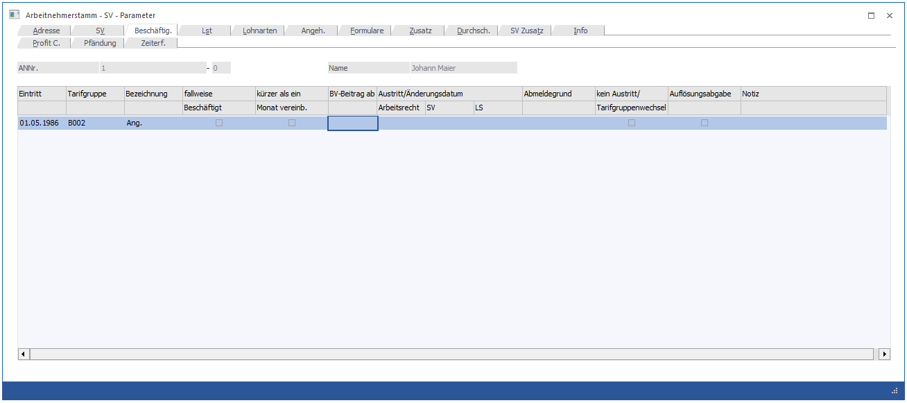
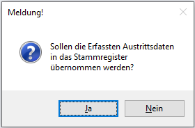

In diesem Fenster, das über den Menüpunkt
1 Stammdaten
1 Arbeitnehmer
1 Arbeitnehmerstamm
oder Schnellaufruf
1 STRG + A
1 Register Arbeitnehmerstamm - Beschäftig.
aufgerufen wird, werden die Beschäftigungen des AN gewartet. Nur wenn ein gültiger Beschäftigungseintrag vorhanden ist, kann der AN abgerechnet werden.

Ø Eintritt
Hier wird das Eintrittsdatum bzw. das Beginndatum der Beschäftigung hinterlegt. Das Datum kann in der aktuellen Periode oder in der Zukunft liegen. Ein Datum, dass sich auf eine vergangene Periode bezieht kann nur über die Rollung eingetragen werden.
Ø Tarifgruppe
Via Auswahllistbox kann die anzuwendende Tarifgruppe gewählt werden. Zur Auswahl stehen jene Tarifgruppen, die im Menüpunkt Tarifgruppenselektion selektiert wurden.
Ø Bezeichnung
Hier wird die Kurzbezeichnung der ausgewählten Tarifgruppe angedruckt.
Ø Fallweise Beschäftigt
Ist ein Arbeitnehmer fallweise beschäftigt, so ist dies mit dieser Checkbox zu kennzeichnen, um einen gültigen mBGM erzeugen zu können. Sobald die Checkbox aktiviert wird, wird automatisch das Eintrittsdatum auch als Austrittsdatum geführt, da pro fallweisen Beschäftigungstag eine eigene Beschäftigung geführt werden muss.
Ø Kürzer als ein Monat vereinb.
Ist das Beschäftigungsverhältnis per Arbeitsvertrag kürzer als ein Monat vereinbart, so muss diese Checkbox aktiviert werden, um einen gültigen mBGM erzeugen zu können.
Ø BV-Beitrag ab
Das BV-Beitrag ab Datum kann pro Beschäftigung hinterlegt werden, wenn im Register SV die Checkbox "BV pflichtig" aktiviert ist.
Austritt/Änderungsdatum
Ø Arbeitsrecht
In diesem Feld wird das arbeitsrechtliche Austrittsdatum (letzter Arbeitstag des Arbeitnehmers) eingetragen. Die nachfolgenden Felder können nur dann ausgefüllt werden, wenn das Austrittsdatum eingetragen wurde. In den nächsten Feldern wird standardmäßig das gleiche Datum vorgeschlagen.
Ø SV
In diesem Feld wird das SV-rechtliche Austrittsdatum eingetragen (das ist das Datum, das um die Ersatzleistungstage verlängert wird). Die Anzahl der Tage ist von der Ersatzleitung abhängig. Werden keine Ersatzleistungen ausgezahlt, ist das SV-Datum gleich dem Austrittsdatum.
Ø LS
Hier muss das lohnsteuer-rechtliche Austrittsdatum eingetragen werden. Wenn Ersatzleistungen ausbezahlt werden, muss hier der Letzte des Monats hinterlegt werden, unabhängig davon, wie viele Ersatzleistungstage ausbezahlt werden. Werden keine Ersatzleistungen gezahlt, ist das LST-Datum dem Austrittsdatum gleich zusetzten.
Hinweis
Wird ein Austrittsdatum hinterlegt, können per Bestätigung der Abfrage - "Sollen die erfassten Austrittsdaten in das Stammregister übernommen werden?" - mit "Ja" die Austrittsdaten in das Register Adresse übernommen werden.

Ø Abmeldegrund
Hier kann zu Informationszwecke der Abmeldegrund bekanntgegeben werden.
Ø Kein Austritt/Tarifgruppenwechsel
Diese Checkbox ist zu aktivieren, wenn eine Beschäftigung nur auf Grund eines Tarifgruppenwechsels beendet wurde. Dies dient sowohl als Information als auch als Grundlage, ob auf Grund eines tatsächlichen Austritts eine J/6 Neuberechnung durchgeführt werden muss.
Ø Auflösungsabgabe
Bis 31.12.2019 konnte in diesem Feld bekanntgegeben werden, ob durch einen Austritt eine Auflösungsabgabe abzurechnen ist. Ab 01.01.2020 ist dieses Feld ein Informationsfeld für vergangene Beschäftigungsverhältnisse und kann nicht mehr editiert werden.
Ø Notiz
Hier kann zu Informationszwecke eine Notiz erfasst werden.
Hinweis
Änderungen zur Beschäftigung, die nicht die aktuelle Periode betreffen, können ausschließlich über die Rollung vorgenommen werden.